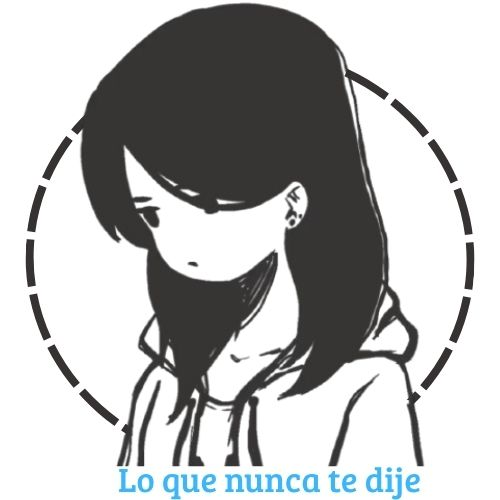
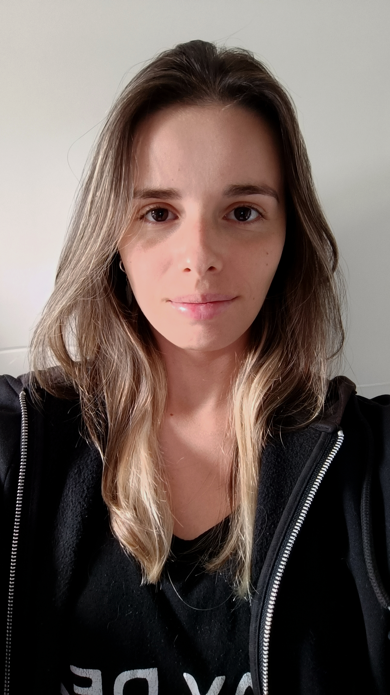
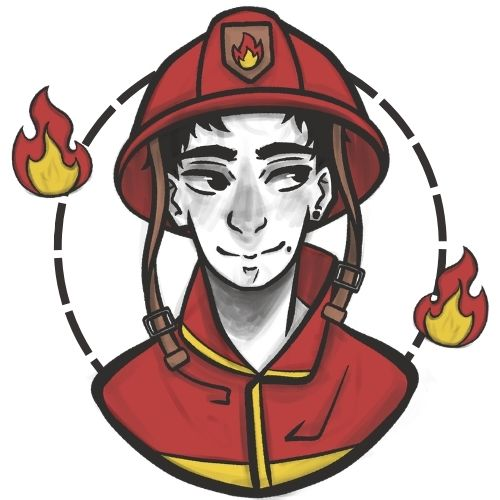
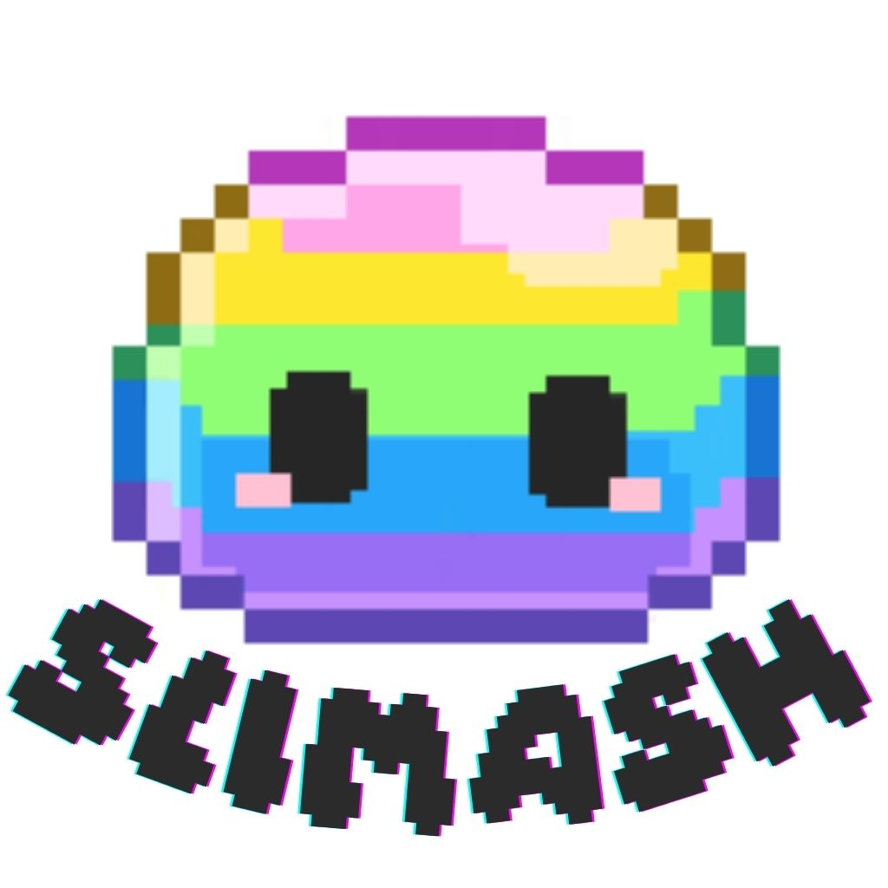
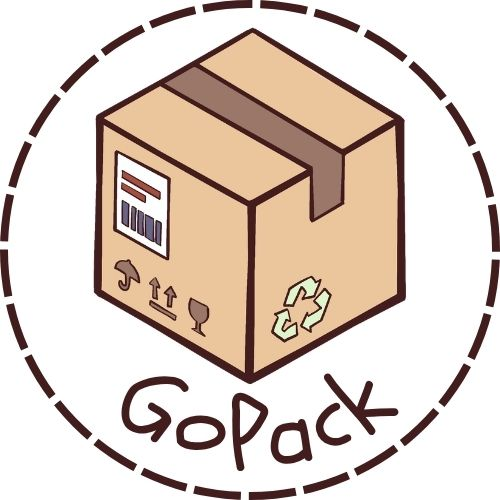

★ Lo que nunca te dije
Diario personal íntimo, seguro y estético. Aplicación desarrollada en Flutter con integración de servicios en la nube mediante Firebase y optimización de archivos multimedia.
- Flutter
- Firebase
- UI/UX

Desarrolladora multiplataforma con formación en diseño digital.
Combino diseño e ilustración con programación para crear proyectos creativos y funcionales.

Diario personal íntimo, seguro y estético. Aplicación desarrollada en Flutter con integración de servicios en la nube mediante Firebase y optimización de archivos multimedia.

App personal diseñada a medida para llevar un seguimiento integral de estudio, entrenamientos y localizaciones, adaptándose a necesidades específicas para oposiciones.

Juego de reacción con estética pixel art donde hay que poner a prueba los reflejos. Desarrollo enfocado en la inmersión del usuario y detalles visuales propios.

App de gestión de paquetes para viajeros, permitiendo el seguimiento en tiempo real de los envíos y la optimización de rutas de entrega.
Tengo otras aplicaciones móviles, herramientas de escritorio y maquetaciones web.
Ver todos en GitHub ↗Soy Susana, desarrolladora multiplataforma (DAM) con un perfil que une
lógica y creatividad. Al tener formación previa en ilustración y diseño digital, le
doy mucha importancia a la experiencia de usuario y al diseño visual (UI/UX).
Creo que un buen software no solo debe tener un código robusto por detrás,
sino que debe resultar intuitivo y atractivo para quien lo usa por delante.
Mi base tecnológica principal incluye Java, Kotlin, C# y Flutter. A esto le sumo
mi reciente experiencia laboral como Junior QA Automation en Indra Group,
donde he automatizado pruebas utilizando herramientas como Selenium y
Robot Framework. Haber trabajado en testing me ha enseñado a anticiparme
a los errores y a priorizar la calidad en cada desarrollo.
Aunque acabo de graduarme y estoy en el inicio de mi carrera, soy una
persona que aprende muy rápido y se esfuerza al máximo por sacar los retos
adelante. Busco un equipo con buen ambiente donde pueda compaginar la
programación con mi faceta visual, seguir creciendo profesionalmente y
aportar valor al proyecto desde el primer día.
¡Estoy abierta a nuevas oportunidades!
Envíame un email